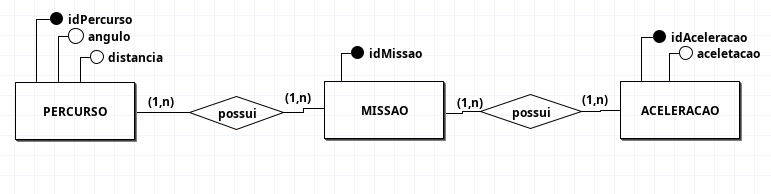

Index
Modelagem do banco
Identificações das Entidades
- ACELERACAO
- MISSAO
- PERCURSO
Descrições das Entidades (Atributos)
- ACELERACAO (idAceleracao, aceleracao)
- MISSAO (IidMissao)
- PERCURSO (idPercurso, angulo, distancia)
Descrição dos Relacionamentos
-
MISSAO possui ACELERACAO
- Regra de Negócio: Uma
MISSAOpode possuir uma ou váriasACELERACOES, e um mesmo registro deACELERACAOpode estar associado a uma ou váriasMISSOES. - Cardinalidade: (N:N)
- Regra de Negócio: Uma
-
MISSAO possui PERCURSO
- Regra de Negócio: Um
PERCURSOpode estar associado a uma ou váriasMISSOES, e umaMISSAOpode ocorrer em um ou váriosPERCURSOS. - Cardinalidade: (N:N)
- Regra de Negócio: Um
Diagrama de Entidade-Relacionamento(DE-R)

Análise de Dados do Sistema de Missões
Analisar os dados de cada missão é importante para entender pontos-chave, como o tempo total que ela leva para ser concluída. Ao observar os números de distância, ângulo e aceleração, conseguimos saber se o percurso foi feito de forma rápida, se o equipamento está funcionando corretamente.
Para garantir a qualidade e a validade dos dados, as seguintes regras de negócio são aplicadas durante a coleta e o processamento:
- Integridade do Ângulo: O valor do
angulodeve ser sempre entre 0 e 360 graus. - Validade da Aceleração: O valor de
aceleracaonão pode ser muito pequena (e.g. 0.00001). - Validade do Percurso: A
distanciade um percurso não pode ser negativa.
Tabela de Análise de Dados Fictícios
A tabela abaixo apresenta um resumo estatístico de dados coletados.
| Métrica | Mínimo | Média | Máximo |
|---|---|---|---|
| Distância do Percurso (metros) | 50.5 cm | 33.15 cm | 15.8 cm |
| Ângulo de Manobra (graus) | 0.0° | 95.3° | 359.9° |
| Aceleração Aplicada (m/s²) | 1.0 cm/s² | 4.35 cm/s² | 7.7 cm/s² |